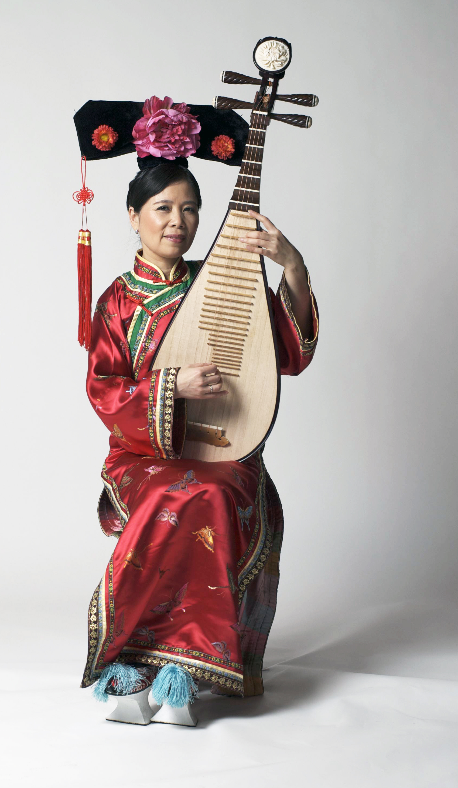
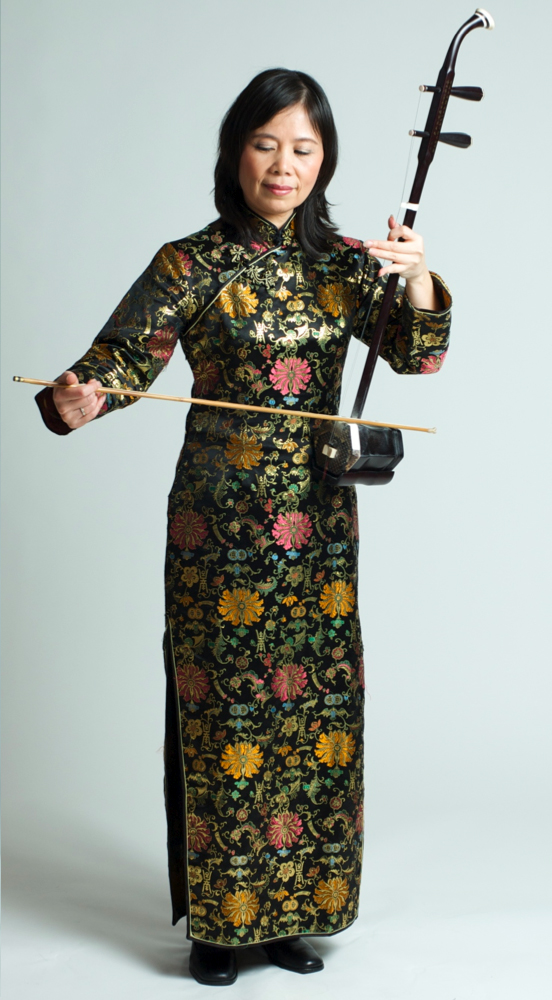

About Cheung Wa Mandy
Cheung, Wa Mandy was born into an artist family in Chekiang, China, and learned to play various musical instruments at a young age. The artistic environment nurtured and enabled her success in music and art early on.
She joined the Chekiang Shaosing Opera Troupe, starting her career as a performer, and has held performances at various venues in different provinces and cities in China. She was invited to perform in programs aired by the Chekiang Television Broadcast Station. Mandy Cheung was recognized as one of the best artists in China, received awards, and was listed in the Chinese Who’s Who. 
Mandy was invited to perform in Japan and Europe, where she has had successful tours. Her performances were recorded by various television stations and were broadcasted in Italy, Korea, Hungary, and the United States.
In addition to performing, she started to teach Pipa and Guzheng after she moved to Hong Kong and became a member of the Composers and Authors Society of Hong Kong.
Current Day
Currently, Mandy lives in the San Francisco Bay Area, where she continues to perform and teach. Many of her students have won awards at competitions.

Mandy has also been performing on events with Bogofusion, presented by Boris Goldmund Productions, Inc. She also had many performances at California's Great America, de Young Museum, San Francisco City Hall, Asian Art Museum of San Francisco, Oakland Museum of California, and Oakland Asian Cultural Center.